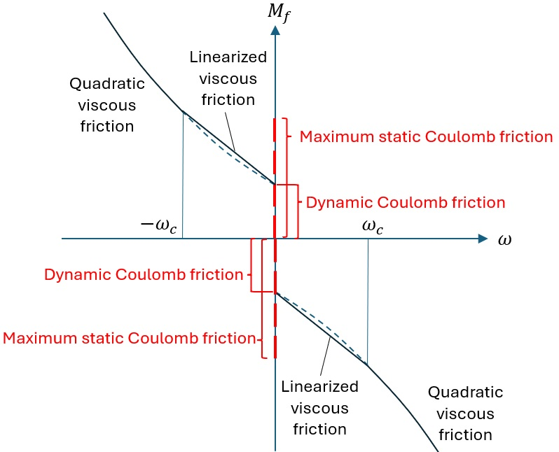

4.10.3. ElastoDyn 이론
이 문서는 작업이 진행 중이며 매우 불완전합니다. 이 문서는 ElastoDyn의 테일 펄 및 로터 펄 부분에 대한 일부 코드 변경 사항을 문서화하기 위해 시작되었습니다. 에서 제공되는 다양한 리소스를 참조하세요. 섹션 4.10 추가 서류의 경우.
4.10.3.1. 표기법
전철기
다음(일부) 점 목록은 ElastoDyn에 의해 정의됩니다.
Z: 플랫폼 기준점O: 타워 상단/베이스 플레이트 지점W: 꼬리털 축의 지정된 지점I: 테일 붐 질량 중심J: 꼬리지느러미의 질량중심
시체
다음(일부) 본체 목록은 ElastoDyn에 의해 정의됩니다.
E: 지구/관성 프레임X: 플랫폼 본체N: 나셀 본체A: 꼬리털 몸체
4.10.3.2. 운동학
ElastoDyn는 플랫폼 기준점에서 시작하여 구조물의 주요 지점의 위치, 속도 및 가속도를 계산합니다. Z 그리고 구조 위로 올라갑니다.
데이터 구조에서 다양한 위치 벡터를 사용할 수 있습니다. RtHSdat. 예를 들어, 점 J의 전역 위치는 다음과 같이 지정됩니다.
병진 변위 벡터(기준 위치와 비교하여 점이 이동한 정도)는 다음과 같이 계산됩니다. \(\boldsymbol{r}_J-\boldsymbol{r}_{J,\text{ref}}\).
ElastoDyn의 좌표계는 변수에 저장됩니다. CoordSys. 주어진 좌표계의 방향행렬은 관성계에서 표현되는 주어진 좌표계의 단위벡터(열벡터로 가정)를 이용하여 구성될 수 있다. 예를 들어 tailfin 좌표계의 경우:
각속도는 변수에 저장됩니다. RtHSdat%AngVelE* 초기 프레임(“지구”, E). 예를 들어, 꼬리털 몸체(몸체)의 각속도 A) 이다:
여기서 \(\boldsymbol{\omega}_{N/X}=\boldsymbol{\omega}_{B/X}+\boldsymbol{\omega}_{N/B}\)
다양한 지점의 선형(병진) 속도는 변수에서 찾을 수 있습니다. RtHSdat%LinVelE*, Kane의 부분 속도(자유도의 시간 도함수에 대한 속도의 야코비안)를 기반으로 계산됩니다. 예를 들어, 점 J의 선형 속도는 다음과 같이 계산됩니다.
야코비안이 있는 곳 \(\frac{\partial v_J}{\partial \dot{q}_j}\) 에 저장되어 있습니다 RtHSdat%PLinVelEJ(:,0)
병진 가속도는 자유도의 1차 및 2차 도함수로부터 기여도의 합으로 계산됩니다. 예를 들어, 점의 가속도 J 다음과 같이 계산됩니다.
여기서 \(\frac{\partial a_J}{\partial \dot{q}_j}\) 에 저장되어 있습니다 RtHSdat%PLinVelEJ(:,1)
각가속도에는 현재 문서화되지 않은 유사한 계산이 필요합니다.
4.10.3.3. 로터와 테일 펄
사용자는 상하 정지 스프링, 상하 정지 댐퍼와 함께 선형 스프링 및 댐퍼 모델을 선택할 수 있습니다.
선형 스프링과 댐퍼에서 적용되는 토크는 다음과 같습니다.
여기서 \(\theta\) 는 자유도(로터 또는 꼬리 털)입니다.
\(k\) 선형 스프링 상수(RFrlSpr 또는 TFrlSpr)
\(d\) 선형 감쇠 상수(RFrlDmp 또는 TFrlDmp).
업/다운 스톱 스프링 토크는 다음과 같이 정의됩니다.
여기서
\(k_{US}\) 업스톱 스프링 상수(RFrlUSSpr 또는 TFrlUSSpr),
\(\theta_{k_{US}}\) 업스톱 스프링 각도(RFrlUSSP 또는 TFrlUSSP) 및 유사한 표기법이 다운 스톱 스프링에 사용됩니다.
업/다운 정지 댐핑 토크는 다음과 같이 정의됩니다.
유사한 주석이 사용되는 경우. 주어진 자유도에서의 총 모멘트는 다음과 같습니다.
4.10.3.4. 요 마찰 모델
요 마찰 모델은 쿨롱 점성 접근 방식을 기반으로 ElastoDyn에서 구현됩니다. 요율에 따른 요 마찰 모멘트(\(\omega\))는 아래에 나와 있습니다. 그림 4.49


그림 4.49 요 마찰 모델
다음의 경우 YawFrctMod = 1, 최대 정적 또는 동적 쿨롱 마찰은 요 베어링의 외부 하중에 의존하지 않습니다. 요 마찰 토크 \(M_f\) 다음과 같이 계산할 수 있습니다. 만약에 \(\omega\neq0\), 우리는 다음과 같은 형태의 동적 마찰을 가집니다.
여기서 \(\bar{D}\) 유효 요 베어링 직경이고 \(\mu_d\) 동적 쿨롱 마찰 계수입니다. 그들의 제품, \(\mu_d\bar{D}\)는 다음을 통해 입력 파일에 지정됩니다. M_CD. 오른쪽의 첫 번째 항은 동적 쿨롱 마찰입니다. 점성 마찰, \(M_{f,vis}\), 형식입니다
또는
여기서 \(\sigma_v\) 및 \(\sigma_{v2}\) 선형 및 2차 점성 마찰 계수는 다음과 같습니다. \(\omega_c\) 점성 마찰이 선형화되는 컷오프 요율입니다. 환경 \(\omega_c=0\) 점성 마찰의 선형화를 비활성화합니다.
다음의 경우 \(\omega=0\) 및 \(\dot{\omega}\neq 0\), 우리는 다음과 같은 약간 수정된 동적 쿨롱 마찰을 가집니다.
여기서 \(M_z\) 외부 요 토크입니다. 만약에 \(\omega=0\) 및 \(\dot{\omega}=0\), 우리는 다음과 같은 형태의 정적 쿨롱 마찰을 가집니다.
여기서 \(\mu_s\) 정적 쿨롱 마찰 계수입니다. 제품 \(\mu_s\bar{D}\) 다음을 통해 입력 파일에 지정됩니다. M_CSmax.
다음의 경우 YawFrctMod = 2, 최대 정적 또는 동적 쿨롱 마찰은 요 베어링의 외부 하중에 따라 달라지며, \(\left|F_z\right|\), 베어링 축방향 하중의 크기, \(F_z<0\), 베어링 전단력 크기로부터, \(\sqrt{F_x^2+F_y^2}\), 그리고 베어링 굽힘 모멘트 크기로부터, \(\sqrt{M_x^2+M_y^2}\). 만약에 \(\omega\neq0\), 우리는 다음과 같은 형태의 동적 마찰을 가집니다.
여기서 \(M_{f,vis}\) 때와 같은 방식으로 정의됩니다. YawFrctMod = 1. 제품 \(\mu_{df}\bar{D}\) 및 \(\mu_{dm}\) 다음을 통해 입력 파일에 지정됩니다. M_FCD 및 M_MCD, 각각. 만약에 \(\omega=0\) 및 \(\dot{\omega}\neq 0\), 우리는 다음과 같은 수정된 동적 쿨롱 마찰을 가집니다.
다음의 경우 \(\omega=0\) 및 \(\dot{\omega}=0\), 우리는 다음과 같은 형태의 정적 쿨롱 마찰을 가집니다.
여기서 곱은 \(\mu_{sf}\bar{D}\) 및 \(\mu_{sm}\) 다음을 통해 입력 파일에 지정됩니다. M_FCSmax 및 M_MCSmax, 각각.
정적 '정지'(정적 기여가 동적 쿨롱 마찰을 초과하는 경우)는 현재 시간 단계에서 요 회전 속도와 가속도가 모두 0인 경우에만 적용됩니다. 회전 가속도가 null이 아닌 경우 마찰의 정적 부분이 생략됩니다. 이는 동적 의미에서 0 속도를 통과할 때 '따뜻한' 관절이 끈적임을 느끼지 않을 수 있다는 사실을 설명하기 위한 것입니다. [ed-HWS23]. 언제 \(\omega=0\), 요 베어링 정적 또는 동적 마찰은 마찰 저항이 외부 적용 모멘트에 반대되도록 공식화됩니다. \(M_z\), 그것을 극복하지 못한 채.
4.10.3.5. 블레이드 피치 역학
OpenFAST v5 이전에는 블레이드 피치 각도가 ServoDyn의 피치 명령에 따라 고정되거나 규정되었습니다. ServoDyn 피치 명령에 따라 피치 각도가 잠재적으로 변경됨에도 불구하고 블레이드 루트 피치 속도와 가속도는 항상 0이었습니다. 블레이드가 ElastoDyn로 모델링된 경우 블레이드 피치 관성으로 인한 피치 모멘트도 없었습니다. BeamDyn를 사용하여 블레이드를 모델링한 경우 블레이드 루트 노드만 피치 속도와 가속도가 0이었습니다. 루트 노드를 따르는 나머지 블레이드의 피치 관성과 비틀림은 여전히 고려되어 블레이드 피치 역학을 부분적으로 포착했습니다.
OpenFAST v5에서는 새로운 블레이드 피치 자유도, PitchDOF, ElastoDyn에 도입되었습니다. 설정으로 PitchDOF 사실, 이제 ElastoDyn에서 블레이드 피칭을 동적으로 시뮬레이션할 수 있습니다. 이 기능을 사용하려면 사용자는 새로운 기능을 통해 피치 축에 대한 피치 액츄에이터/베어링의 관성 모멘트를 제공해야 합니다. PBrIner(I) ElastoDyn 입력 파일에 입력이 추가되었습니다. 블레이드가 BeamDyn 대신 ElastoDyn로 모델링된 경우 피치 축을 중심으로 편향되지 않은 블레이드의 총 관성 모멘트도 새를 통해 제공되어야 합니다. BlPIner(I) 입력. ElastoDyn는 블레이드 비틀림을 모델링하지 않기 때문에 분산된 블레이드 피치 관성을 지정할 필요가 없습니다. 또한 시뮬레이션 중 유효 블레이드 피치 관성 모멘트는 다음보다 높을 수 있습니다. BlPIner(I) 블레이드 굽힘으로 인한 추가 기여로 인해. ElastoDyn를 사용하여 블레이드를 모델링할 때, PBrIner(I) 및 BlPIner(I) 운동 방정식에 필요한 총 피치 관성 모멘트를 얻기 위해 단순히 함께 추가됩니다. 시뮬레이션 결과는 다음의 합과 동일합니다. PBrIner(I) 및 BlPIner(I) 변함없이 유지됩니다. BeamDyn를 사용하여 블레이드를 모델링할 때, BlPIner(I) 블레이드를 따른 피치 관성 모멘트의 분포는 블레이드 비틀림을 모델링하는 BeamDyn에서 고려되기 때문에 무시됩니다. 그러나 여전히 현실적인 가치를 갖는 것이 필요하다. PBrIner(I) ElastoDyn에서. 환경 PBrIner(I) 0 또는 0에 가까워지면 ElastoDyn에서 수치 문제가 발생합니다.
다음의 경우 PitchDOF 사실이라면 블레이드 루트 피치 각도는 규정되는 대신 동적으로 해결됩니다. 이 경우 피치 액츄에이터 토크는 각 블레이드에 대해 ServoDyn에 의해 다음과 같이 계산됩니다.
BlPitchMom = - PitSpr * ( BlPitch - BlPitchCom ) - PitDamp * ( BlPRate - BlPRateCom )
피치 액츄에이터 강성/스프링 상수 PitSpr 그리고 댐핑 PitDamp 각 블레이드에 대한 두 가지 모두 ServoDyn 입력 파일에 정의되어 있습니다. 이 액츄에이터 토크는 블레이드의 루트에 적용됩니다. 동일하지만 반대되는 토크가 로터 허브에 적용됩니다. 피치 명령 BlPitchCom 및 피치 속도 명령 BlPRateCom 다음과 같은 경우에는 ElastoDyn에서 직접 사용되지 않습니다. PitchDOF 사실이다. (ServoDyn는 여부에 관계없이 피치 액츄에이터 토크를 계산하고 출력합니다. PitchDOF ElastoDyn에서는 참 또는 거짓입니다. 그러나 후자의 경우에는 단순히 액츄에이터 토크가 사용되지 않습니다.)
ServoDyn에서 활성 블레이드 피치 제어가 켜져 있을 때, BlPitchCom 터빈 컨트롤러에 의해 계산됩니다. 활성 블레이드 피치 제어가 꺼진 경우(PCMode=0 또는 그 동안 t<TPCOn 언제 PCMode>0), BlPitchCom 중립 블레이드 피치 위치에 의해 제공됩니다 PitNeut(I) ServoDyn 입력 파일에서. 마지막으로, 피치 기동 중에, BlPitchCom 다음과 같이 주어진 일정한 속도로 최종 피치 위치에 접근합니다. PitManRat(I) ServoDyn 입력 파일에서.
피치 위치 명령 외에도 피치 속도 명령 BlPRateCom ServoDyn에도 추가됩니다. 현재, BlPRateCom DLL 컨트롤러에서만 사용할 수 있습니다(PCMode=5) 또는 오버라이드 피치 기동 중. 정상 작동 중에 피치 속도 명령은 두 연속 컨트롤러 단계의 피치 설정점을 기반으로 유한 차분을 사용하여 추정됩니다. 피치 조작 중에 피치 속도 명령은 간단히 다음과 같이 설정됩니다. PitManRat(I) 최종 피치 위치에 도달할 때까지 ServoDyn 입력 파일에 저장합니다. BlPRateCom 0일 때 PCMode 0, 3, 4 또는 피치 조작이 완료된 후입니다.
다음의 경우 PitchDOF ElastoDyn에서 true인 경우 다음 ServoDyn 설정이 권장됩니다.
DLL 컨트롤러를 사용하는 경우(
PCMode=5), 세트BPCutoff피치 속도 명령의 불연속성을 피하기 위해 적절한 값(터빈에 따라 1Hz 정도)으로 설정합니다. 이는 액추에이터 토크의 큰 변동을 줄이는 데 도움이 될 수 있습니다. 피치 명령과 피치 속도 명령 모두에 동일한 저역 통과 필터가 적용됩니다.유한 차분을 사용하여 추정된 피치 속도 명령과의 일관성을 위해 다음을 설정하십시오.
DLL_Ramp사실로. 이는 다음과 같은 경우 액추에이터 순간의 작은 지터를 줄일 수 있습니다.DLL_DT시뮬레이션 시간 단계보다 큽니다.마지막으로, 합리적인 시간 상수(1/4초 정도)와 감쇠비(약 0.7)를 얻으려면 피치 액츄에이터 강성과 감쇠를 적절하게 설정해야 합니다. 더 높은
PitSpr(I)및PitDamp(I)수치적 안정성을 위해서는 더 작은 시간 단계가 필요합니다. 주어진 감쇠 기간을 달성하려면Td감쇠비zeta, 다음 방정식을 사용하여 초기 추정치를 얻을 수 있습니다.PitSpr(I)및PitDamp(I):
PitSpr = 4 * pi^2 * ( PBrIner + BlPIner ) / ( Td^2 * ( 1 - zeta^2 ) )
PitDamp = 2 * zeta * sqrt( PitSpr * ( PBrIner + BlPIner ) )
다음의 경우 PitchDOF true이면 ElastoDyn에서 다음과 같은 새로운 출력 채널을 사용할 수 있습니다.
BldPRate1- 블레이드 1 피치 속도(deg/s)BldPRate2- 블레이드 2 피치 속도(deg/s)BldPRate3- 블레이드 3 피치 속도(deg/s)BldPAcc1- 블레이드 1 피치 가속도(deg/s^2)BldPAcc2- 블레이드 2 피치 가속도(deg/s^2)BldPAcc3- 블레이드 3 피치 가속도(deg/s^2)
이러한 출력 채널은 다음 경우에만 유효합니다. PitchDOF 깃털 위치에 대한 양수 값의 경우에 해당됩니다.
다음의 경우 PitchDOF ElastoDyn에서 false인 경우 OpenFAST는 ServoDyn가 비활성화된 경우 ElastoDyn에 정의된 초기 위치로 고정되거나 ServoDyn의 피치 명령으로 설정된 블레이드 루트 피치 각도를 사용하여 이전과 같이 작동합니다. 환경 PitchDOF 거짓이라고 해서 블레이드 피치 각도가 일정하다는 의미는 아닙니다. PBrIner(I) 및 BlPIner(I) ElastoDyn 입력 파일의 경우 둘 다 무시됩니다. PitchDOF 거짓입니다. ServoDyn의 피치 액추에이터 토크는 ElastoDyn에서도 무시됩니다. 마지막으로 ElastoDyn에 지정된 초기 블레이드 피치 위치는 다음으로 대체됩니다. PitNeut(I) ServoDyn에서 ServoDyn가 활성화되었지만 활성 블레이드 피치 제어가 꺼진 경우(PCMode=0 또는 그 동안 t<TPCOn 언제 PCMode>0).
이용안내
활성화의 효과 PitchDOF 블레이드 루트 하중에 대한 영향은 블레이드가 ElastoDyn로 모델링될 때 더 중요한 경향이 있습니다. 그렇지 않으면 ElastoDyn가 블레이드 피치 관성을 완전히 무시하기 때문입니다. 블레이드가 BeamDyn에서 모델링되면 블레이드 피치 관성(루트 노드 제외)과 블레이드 비틀림이 항상 고려되기 때문에 효과가 덜 중요한 경향이 있습니다. 이 경우 활성화 PitchDOF ElastoDyn에서는 루트 노드의 피치 관성을 포함하여 전체 블레이드의 피치 관성이 역학에 포함될 수 있습니다.
게다가, PitchDOF 블레이드 피칭에서 갑작스런 시작이나 정지 후에 더 중요한 경향이 있습니다. 예를 들어, 이는 블레이드 피치 각도가 포화될 때(피치 명령이 위에서 제안한 대로 저역 통과 필터링되지 않은 경우) 정상 작동 중에 또는 블레이드가 페더링 위치로 빠르게 피치하고 정지해야 하는 비상 종료 중에 발생할 수 있습니다. 이러한 상황에서는 PitchDOF OpenFAST는 블레이드가 ElastoDyn에서 모델링된 경우 놓칠 수 있는 블레이드 루트의 큰 피치 모멘트를 캡처할 수 있습니다. 또는 블레이드가 BeamDyn로 모델링된 경우 블레이드 루트에서 불연속적인 피치 속도를 방지하고 충동적인 시작 또는 급정지 직후 루트 모멘트의 큰 변동을 완화하는 데 도움이 될 수 있습니다.
4.10.4. 개발자 노트
내부 좌표계
ElastoDyn의 다양한 좌표계는 변수에 저장됩니다. CoordSys. ElastoDyn에서 내부적으로 사용되는 좌표계는 OpenFAST 입력/출력 좌표계와 다른 규칙을 사용합니다.
예를 들어, 나셀 좌표계의 경우 단위 축이 표시됩니다. \(x_n,y_n,z_n\) OpenFAST에서, 그리고 \(d_1,d_2,d_3\) ElastoDyn에서는 다음 변환이 적용됩니다. \(d_1 = x_n\), \(d_2 =z_n\) 및 \(d_3 =-y_n\).
다음 (일부) 좌표계 목록은 ElastoDyn에 의해 내부적으로 정의됩니다.
z : 관성좌표계
a : 타워베이스 좌표계
t : 타워-노드 좌표계(노드당 하나)
d : 나셀 좌표계
c : 축 기울어진 좌표계
RF : 로터 펄 좌표계
tf : 꼬리털 좌표계
g : 허브 좌표계